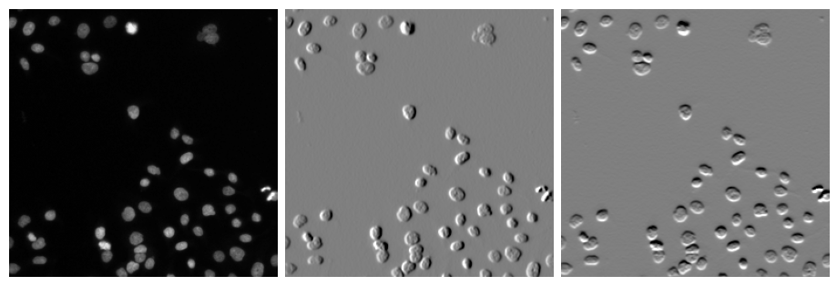
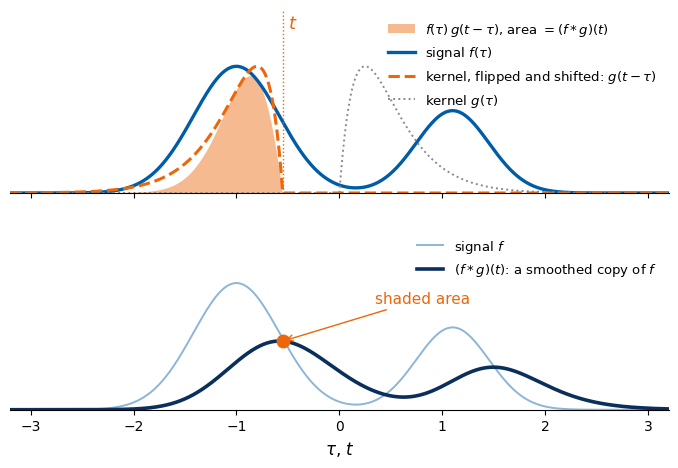
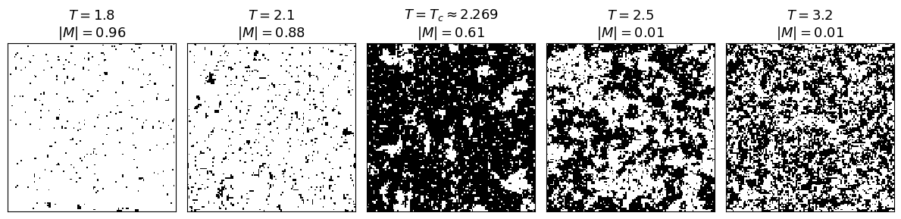
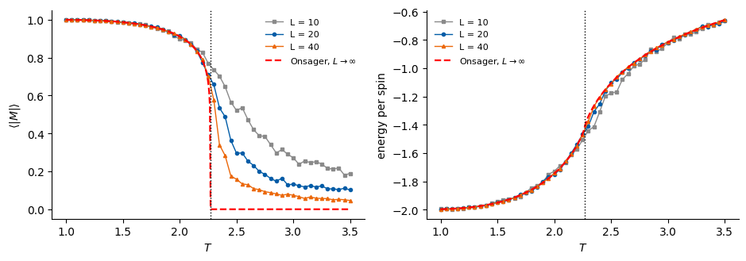
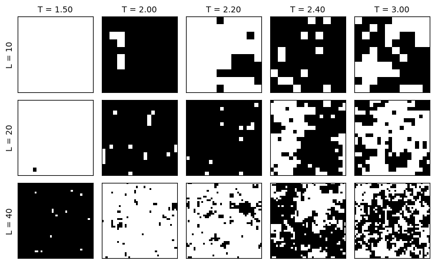
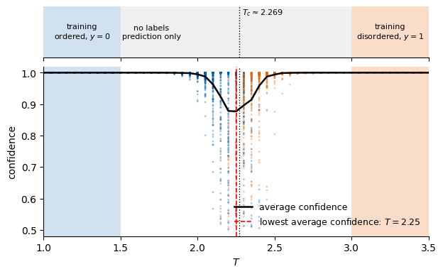

Code
import numpy as np, matplotlib.pyplot as plt
import os
OUT = "figures"; os.makedirs(OUT, exist_ok=True)
blue = "#005CA7"; orange = "#EB6709"; navy = "#0A2F5C"; grey = "#8A8A8A"
This notebook makes the figures of Lecture 4 that do not come from a trained network: the Sobel filters on a microscopy image, the 1D convolution picture, and the Ising-model snapshots across the phase transition. CPU only, seeded; it runs in under a minute.
import numpy as np, matplotlib.pyplot as plt
import os
OUT = "figures"; os.makedirs(OUT, exist_ok=True)
blue = "#005CA7"; orange = "#EB6709"; navy = "#0A2F5C"; grey = "#8A8A8A"The image is human_mitosis from scikit-image (fluorescence microscopy, CC0; D. Root, Moffat et al., Cell 2006). We apply the two Sobel kernels of the slide with a cross-correlation, exactly as a CNN layer would.
import skimage.data as d
from scipy.ndimage import correlate
img = d.human_mitosis().astype(float)[96:352, 96:352]
Gx = np.array([[-1, 0, 1], [-2, 0, 2], [-1, 0, 1]], float)
Gy = np.array([[1, 2, 1], [0, 0, 0], [-1, -2, -1]], float)
ex, ey = correlate(img, Gx), correlate(img, Gy)
fig, ax = plt.subplots(1, 3, figsize=(9, 3.1))
ax[0].imshow(img, cmap="gray")
for a, im in zip(ax[1:], [ex, ey]):
v = np.percentile(np.abs(im), 99.5); a.imshow(im, cmap="gray", vmin=-v, vmax=v)
for a in ax: a.axis("off")
plt.subplots_adjust(wspace=0.03, left=0, right=1, top=1, bottom=0)
plt.savefig(f"{OUT}/gen_sobel_mitosis.png", dpi=200); plt.show()
A signal \(f\) with two bumps and an asymmetric kernel \(g\) (peak at \(u=0.25\)). At one shift \(t\) we draw \(f(\tau)\), the flipped and shifted kernel \(g(t-\tau)\) and the area under their product; that area is one point of \((f*g)(t)\). The last line checks that the two numbers agree.
import numpy as np
blue="#005CA7"; orange="#EB6709"; navy="#0A2F5C"; grey="#8A8A8A"
x=np.linspace(-4,4,4001); dx=x[1]-x[0]
f=lambda u: 1.0*np.exp(-(u+1.0)**2/0.35)+0.65*np.exp(-(u-1.1)**2/0.25)
def g(u): # asymmetric kernel, peak 1 at u = 0.25
return np.where(u>=0,(u/0.25)*np.exp(1-u/0.25),0.0)
t0=-0.55
conv=np.array([np.sum(f(x)*g(t-x))*dx for t in x])
fig,(a1,a2)=plt.subplots(2,1,figsize=(8.5,5.2),sharex=True,gridspec_kw=dict(hspace=0.18))
prod=f(x)*g(t0-x)
a1.fill_between(x,0,prod,color=orange,alpha=0.45,lw=0,label=r"$f(\tau)\,g(t-\tau)$, area $=(f*g)(t)$")
a1.plot(x,f(x),color=blue,lw=2.4,label=r"signal $f(\tau)$")
a1.plot(x,g(t0-x),color=orange,lw=2.2,ls="--",label=r"kernel, flipped and shifted: $g(t-\tau)$")
a1.plot(x,g(x),color=grey,lw=1.4,ls=":",label=r"kernel $g(\tau)$")
a1.axvline(t0,color=orange,lw=1,ls=":")
a1.text(t0+0.05,1.3,r"$t$",color=orange,fontsize=13)
a1.set_ylim(0,1.45); a1.set_yticks([])
a1.legend(fontsize=9.5,frameon=False,loc="upper right")
a2.plot(x,f(x),color=blue,lw=1.4,alpha=0.45,label=r"signal $f$")
a2.plot(x,conv,color=navy,lw=2.6,label=r"$(f*g)(t)$: a smoothed copy of $f$")
yc=np.interp(t0,x,conv)
a2.plot([t0],[yc],"o",color=orange,ms=9,zorder=5)
a2.annotate("shaded area",xy=(t0,yc),xytext=(t0+0.9,yc+0.3),color=orange,fontsize=11,
arrowprops=dict(arrowstyle="->",color=orange))
a2.set_ylim(0,1.45); a2.set_yticks([]); a2.set_xlim(-3.2,3.2)
a2.set_xlabel(r"$\tau$, $t$",fontsize=12)
a2.legend(fontsize=9.5,frameon=False,loc="upper right")
for a in (a1,a2):
for s in ["top","right","left"]: a.spines[s].set_visible(False)
plt.savefig(f"{OUT}/gen_conv1d_smooth.png",dpi=170,bbox_inches="tight"); plt.show()
print("(f*g)(t) at t =", t0, ":", yc, " shaded area:", np.sum(prod)*dx)
(f*g)(t) at t = -0.55 : 0.5413673435154289 shaded area: 0.541367343515429Checkerboard Metropolis on a \(128\times128\) lattice (\(J=1\), \(h=0\), periodic boundaries), 3000 sweeps at each of five temperatures. Below \(T_c\) we start from all spins up, above \(T_c\) from random spins. The printed \(|M|\) are the values in the figure titles.
import time
L=128; rng=np.random.default_rng(1)
Tc=2/np.log(1+np.sqrt(2))
Ts=[1.8,2.1,Tc,2.5,3.2]
mask=(np.add.outer(np.arange(L),np.arange(L))%2).astype(bool)
def sweep(s,T):
for m in (mask,~mask):
nb=np.roll(s,1,0)+np.roll(s,-1,0)+np.roll(s,1,1)+np.roll(s,-1,1)
dE=2*s*nb
acc=(dE<=0)|(rng.random(s.shape)<np.exp(-dE/T))
s[m&acc]*=-1
return s
snaps=[]
t0=time.time()
for T in Ts:
s=np.ones((L,L),int) if T<Tc else rng.choice([-1,1],(L,L))
for _ in range(3000): s=sweep(s,T)
snaps.append(s.copy()); print(T, abs(s.mean()), round(time.time()-t0,1), flush=True)
fig,ax=plt.subplots(1,5,figsize=(12,3.1))
for a,s,T in zip(ax,snaps,Ts):
a.imshow(s,cmap="gray",vmin=-1,vmax=1,interpolation="nearest"); a.set_xticks([]); a.set_yticks([])
t=r"$T = T_c \approx 2.269$" if abs(T-Tc)<1e-9 else rf"$T = {T}$"
a.set_title(t+"\n"+rf"$|M| = {abs(s.mean()):.2f}$",fontsize=13)
plt.tight_layout(); plt.savefig(f"{OUT}/gen_Ising_phase_snapshots.png",dpi=160,bbox_inches="tight",pad_inches=0.05); plt.show()1.8 0.9581298828125 2.12.1 0.8829345703125 4.22.269185314213022 0.60986328125 6.72.5 0.0126953125 9.93.2 0.0106201171875 13.0
The configuration at \(T_c\) (third panel) is also used alone, on the plain-words slide and as the input of the CNN diagram; we crop it from the figure.
from PIL import Image
im = Image.open(f"{OUT}/gen_Ising_phase_snapshots.png").convert("L"); a = np.array(im); h = a.shape[0]
cols = [x for x in range(a.shape[1]) if (a[int(h*0.3):int(h*0.95), x] < 60).mean() > 0.97]
x0, x1 = cols[8], cols[11] + 1 # third panel: T = T_c
rows = [y for y in range(h) if (a[y, x0+5:x1-5] < 60).mean() > 0.97]
im.crop((x0, rows[0], x1, rows[-1] + 1)).save(f"{OUT}/gen_Ising_single_config.png")
print("panel borders:", cols)panel borders: [7, 8, 362, 363, 386, 387, 741, 742, 765, 766, 1121, 1122, 1145, 1146, 1500, 1501, 1524, 1525, 1879, 1880]The Ising slides of the lecture use configurations made by the Metropolis code of Labs 010 and 011 (checkerboard Metropolis, periodic boundaries, 51 temperatures from 1.0 to 3.5, 200 configurations per temperature), stored in data/ising_Nx{L}_Ny{L}.npz for \(L = 10, 20, 40\); the same generator is copied below, so that missing files are regenerated (about a minute). Here we load them and compare the Monte Carlo averages of \(|M|\) and of the energy per spin with Onsager’s exact results for the infinite lattice: \[u(T) = -\coth(2\beta)\Big[1 + \tfrac{2}{\pi}\big(2\tanh^2(2\beta) - 1\big)K(\kappa^2)\Big],\qquad \kappa=\frac{2\sinh 2\beta}{\cosh^2 2\beta},\qquad \langle M\rangle = \big[1-\sinh^{-4}(2\beta)\big]^{1/8}\ (T<T_c),\] with \(K\) the complete elliptic integral of the first kind and \(\beta = 1/T\) (\(J = k_B = 1\)).
import torch, torch.nn as nn
from scipy.special import ellipk
TC = 2.0 / np.log(1.0 + np.sqrt(2.0))
import os, time
rng = np.random.default_rng(0)
# Data generation of Lab 010/011 (copied unchanged): loads data/ising_Nx{L}_Ny{L}.npz if it exists, otherwise generates it
def metropolis_sweep(s, beta, masks, rng):
# One checkerboard Metropolis sweep (in place) of a batch of lattices s: (..., Ny, Nx), periodic boundaries.
for mask in masks:
nn_sum = (np.roll(s, 1, -1) + np.roll(s, -1, -1) + np.roll(s, 1, -2) + np.roll(s, -1, -2))
accept = rng.random(s.shape, dtype=np.float32) < np.exp(-beta * 2.0 * s * nn_sum)
s[...] = np.where(mask & accept, -s, s)
def generate_dataset(Nx, Ny, temperatures, n_chains, n_samples, n_equil, n_between, rng):
# Cold start, burn-in, then n_samples stored configurations per chain; random global spin flip at the end.
y, x = np.indices((Ny, Nx)); black = (x + y) % 2 == 0
beta = (1.0 / temperatures.astype(np.float32))[None, :, None, None]
s = np.ones((n_chains, len(temperatures), Ny, Nx), np.float32)
for _ in range(n_equil):
metropolis_sweep(s, beta, (black, ~black), rng)
stored = np.empty((n_samples, n_chains, len(temperatures), Ny, Nx), np.int8)
for k in range(n_samples):
for _ in range(n_between):
metropolis_sweep(s, beta, (black, ~black), rng)
stored[k] = s
configs = stored.transpose(2, 0, 1, 3, 4).reshape(len(temperatures), n_samples * n_chains, Ny, Nx)
flip = rng.choice(np.array([-1, 1], np.int8), size=configs.shape[:2])
return configs * flip[:, :, None, None]
def load_or_generate(L, rng, samples_per_T=200):
path = f"data/ising_Nx{L}_Ny{L}.npz"
if os.path.exists(path):
d = np.load(path)
print(f"loaded {path}: configs {d['configs'].shape}")
return d["configs"], d["T"]
temperatures = np.round(np.arange(1.0, 3.5 + 1e-9, 0.05), 2)
n_chains = 20 if L <= 20 else 10 # fewer, longer chains for large lattices (same 200 samples per T)
t0 = time.time()
configs = generate_dataset(L, L, temperatures, n_chains=n_chains, n_samples=samples_per_T // n_chains,
n_equil=1000 + 2 * L * L // 4, n_between=20, rng=rng)
os.makedirs("data", exist_ok=True)
np.savez_compressed(path, configs=configs, T=temperatures, Nx=L, Ny=L)
print(f"generated {path}: configs {configs.shape} in {time.time() - t0:.1f} s")
return configs, temperatures
data = {}
for L in (10, 20, 40):
c, Ts = load_or_generate(L, rng); data[L] = (c.astype(np.float32), Ts)
def u_exact(T):
K = 1.0 / np.asarray(T, float); kap = 2 * np.sinh(2 * K) / np.cosh(2 * K) ** 2
return -1 / np.tanh(2 * K) * (1 + 2 / np.pi * (2 * np.tanh(2 * K) ** 2 - 1) * ellipk(kap ** 2))
def M_exact(T):
T = np.asarray(T, float); out = np.zeros_like(T); low = T < TC
out[low] = (1 - np.sinh(2 / T[low]) ** -4) ** 0.125; return out
def energy_per_spin(c):
return -(c * (np.roll(c, 1, -1) + np.roll(c, 1, -2))).mean((-1, -2))
Tf = np.linspace(1.0, 3.5, 400)
fig, axs = plt.subplots(1, 2, figsize=(9.5, 3.4))
for (L, (c, Ts)), col, mk in zip(data.items(), ["#8A8A8A", blue, orange], ["s", "o", "^"]):
axs[0].plot(Ts, np.abs(c.mean((-1, -2))).mean(1), mk + "-", color=col, ms=3, lw=1, label=f"L = {L}")
axs[1].plot(Ts, energy_per_spin(c).mean(1), mk + "-", color=col, ms=3, lw=1, label=f"L = {L}")
axs[0].plot(Tf, M_exact(Tf), "r--", lw=1.6, label=r"Onsager, $L\to\infty$"); axs[1].plot(Tf, u_exact(Tf), "r--", lw=1.6, label=r"Onsager, $L\to\infty$")
axs[0].set_ylabel(r"$\langle |M| \rangle$"); axs[1].set_ylabel("energy per spin")
for a in axs:
a.axvline(TC, color="k", ls=":", lw=1); a.set_xlabel("$T$"); a.legend(frameon=False, fontsize=8)
for s_ in ["top", "right"]: a.spines[s_].set_visible(False)
plt.tight_layout(); plt.savefig(f"{OUT}/gen_Ising_M_E_vs_T.png", dpi=170, bbox_inches="tight"); plt.show()
print("u_exact(1.5) =", round(float(u_exact(1.5)), 8))loaded data/ising_Nx10_Ny10.npz: configs (51, 200, 10, 10)
loaded data/ising_Nx20_Ny20.npz: configs (51, 200, 20, 20)
loaded data/ising_Nx40_Ny40.npz: configs (51, 200, 40, 40)
u_exact(1.5) = -1.95111657Snapshots from the same data set: one configuration per temperature and lattice size (white and black: the two spin values).
T_show = [1.5, 2.0, 2.2, 2.4, 3.0]
fig, axs = plt.subplots(3, len(T_show), figsize=(7.5, 4.6))
for r, L in enumerate((10, 20, 40)):
c, Ts = data[L]
for k, T in enumerate(T_show):
i = int(np.argmin(np.abs(Ts - T))); a = axs[r, k]
a.imshow(c[i, 0], cmap="gray", vmin=-1, vmax=1, interpolation="nearest"); a.set_xticks([]); a.set_yticks([])
if r == 0: a.set_title(f"T = {Ts[i]:.2f}", fontsize=10)
if k == 0: a.set_ylabel(f"L = {L}", fontsize=10)
plt.tight_layout(); plt.savefig(f"{OUT}/gen_Ising_dataset.png", dpi=170, bbox_inches="tight"); plt.show()
The model and the training are those of Lab 011, copied unchanged: two blocks of Conv2D (32 kernels \(3\times3\), circular padding, ReLU) and max pooling, a dense layer of 64 ReLU nodes, 2 outputs with softmax, cross-entropy, Adam. Training data: only \(T<1.5\) (label 0, ordered) and \(T>3\) (label 1, disordered). After training we predict at every temperature. The confidence of a prediction is \(\max(p_0, p_1)\); its average is lowest where the network is least sure. A second estimate of \(T_c\) is the temperature where \(\langle p_1\rangle_T\) crosses \(1/2\). We train three times (seeds 0, 1, 2) on \(L = 40\).
T_MIN, T_MAX = 1.5, 3.0
def make_training_set(configs, temperatures, rng, val_fraction=0.2):
low, high = temperatures < T_MIN, temperatures > T_MAX
X = np.concatenate([configs[low].reshape(-1, *configs.shape[2:]), configs[high].reshape(-1, *configs.shape[2:])])
y = np.concatenate([np.zeros(configs[low].shape[0] * configs.shape[1]), np.ones(configs[high].shape[0] * configs.shape[1])])
perm = rng.permutation(len(y))
X, y = X[perm], y[perm]
n_val = int(val_fraction * len(y))
to_t = lambda a: torch.tensor(a, dtype=torch.float32).unsqueeze(1) # (n, 1, L, L): one input channel
return (to_t(X[n_val:]), torch.tensor(y[n_val:], dtype=torch.long),
to_t(X[:n_val]), torch.tensor(y[:n_val], dtype=torch.long))
class IsingCNN(nn.Module):
def __init__(self, L, channels=32, hidden=64):
super().__init__()
self.features = nn.Sequential(
nn.Conv2d(1, channels, 3, padding=1, padding_mode="circular"), nn.ReLU(), nn.MaxPool2d(2),
nn.Conv2d(channels, channels, 3, padding=1, padding_mode="circular"), nn.ReLU(), nn.MaxPool2d(2))
side = L // 4 # two 2x2 poolings
self.classifier = nn.Sequential(nn.Flatten(), nn.Linear(channels * side * side, hidden), nn.ReLU(),
nn.Linear(hidden, 2))
def forward(self, x):
return self.classifier(self.features(x)) # logits z_0, z_1
def train(model, X_tr, y_tr, X_val, y_val, epochs=5, batch_size=64, lr=1e-3, verbose=True):
opt = torch.optim.Adam(model.parameters(), lr=lr)
loss_fn = nn.CrossEntropyLoss() # softmax + categorical cross-entropy
history = []
for epoch in range(epochs):
model.train()
perm = torch.randperm(len(y_tr))
for i in range(0, len(y_tr), batch_size):
idx = perm[i:i + batch_size]
opt.zero_grad()
loss = loss_fn(model(X_tr[idx]), y_tr[idx])
loss.backward()
opt.step()
model.eval()
with torch.no_grad():
out_tr, out_val = model(X_tr), model(X_val)
rec = (loss_fn(out_tr, y_tr).item(), (out_tr.argmax(1) == y_tr).float().mean().item(),
loss_fn(out_val, y_val).item(), (out_val.argmax(1) == y_val).float().mean().item())
history.append(rec)
if verbose:
print(f"epoch {epoch + 1:2d}: train loss {rec[0]:.2e} acc {rec[1]:.4f} | validation loss {rec[2]:.2e} acc {rec[3]:.4f}")
return np.array(history)
def predict(model, configs):
# Softmax probabilities p_1 (disordered) for all configurations: array (temperatures, samples).
model.eval()
X = torch.tensor(configs.reshape(-1, 1, *configs.shape[2:]), dtype=torch.float32)
with torch.no_grad():
p = torch.cat([torch.softmax(model(X[i:i + 2048]), dim=1)[:, 1] for i in range(0, len(X), 2048)])
return p.numpy().reshape(configs.shape[:2])
def estimate_Tc(temperatures, p1):
conf = np.maximum(p1, 1 - p1)
conf_mean, p1_mean = conf.mean(1), p1.mean(1)
T_conf = temperatures[np.argmin(conf_mean)] # lowest average confidence
i = np.argmax(p1_mean >= 0.5) # first temperature where <p_1> >= 1/2
T_cross = temperatures[i - 1] + (0.5 - p1_mean[i - 1]) * (temperatures[i] - temperatures[i - 1]) / (p1_mean[i] - p1_mean[i - 1])
return conf_mean, p1_mean, T_conf, T_crossL = 40
cfg, Ts = data[L]
runs = []
for seed in (0, 1, 2):
torch.manual_seed(seed)
Xa, ya, Xb, yb = make_training_set(cfg, Ts, np.random.default_rng(seed))
m = IsingCNN(L); h = train(m, Xa, ya, Xb, yb, epochs=3, verbose=False)
pp = predict(m, cfg); conf_mean, p1_mean, T_conf, T_cross = estimate_Tc(Ts, pp)
runs.append((pp, conf_mean, p1_mean, T_conf, T_cross))
print(f"seed {seed}: validation accuracy {h[-1, 3]:.4f} | T_c from the confidence minimum = {T_conf:.2f} | from <p_1> = 1/2: {T_cross:.3f}")
Tconf = np.array([r[3] for r in runs]); Tcross = np.array([r[4] for r in runs])
print(f"L = {L}: confidence minimum {Tconf.mean():.3f} +- {Tconf.std():.3f}; crossing {Tcross.mean():.3f} +- {Tcross.std():.3f}; exact T_c = {TC:.4f}")seed 0: validation accuracy 1.0000 | T_c from the confidence minimum = 2.25 | from <p_1> = 1/2: 2.282seed 1: validation accuracy 1.0000 | T_c from the confidence minimum = 2.25 | from <p_1> = 1/2: 2.249seed 2: validation accuracy 1.0000 | T_c from the confidence minimum = 2.30 | from <p_1> = 1/2: 2.319
L = 40: confidence minimum 2.267 +- 0.024; crossing 2.283 +- 0.029; exact T_c = 2.2692The figure for the slide (seed 0): on top the temperature bar with the two training windows (\(T<1.5\) and \(T>3\); the data end at \(T=3.5\)); below, the confidence of every configuration, coloured by the predicted phase, and the average confidence.
pp, conf_mean, p1_mean, T_conf, T_cross = runs[0]
conf = np.maximum(pp, 1 - pp)
fig, (axb, ax) = plt.subplots(2, 1, figsize=(7.0, 4.2), sharex=True, gridspec_kw=dict(height_ratios=[0.9, 3], hspace=0.08))
# temperature bar: training windows and the region without labels
for a in (axb, ax):
a.axvspan(1.0, 1.5, color=blue, alpha=0.18, lw=0); a.axvspan(3.0, 3.5, color=orange, alpha=0.22, lw=0)
axb.axvspan(1.5, 3.0, color="#8A8A8A", alpha=0.12, lw=0)
axb.text(1.25, 0.5, "training\nordered, $y=0$", ha="center", va="center", fontsize=8)
axb.text(2.25 - 0.55, 0.5, "no labels\nprediction only", ha="center", va="center", fontsize=8)
axb.text(3.25, 0.5, "training\ndisordered, $y=1$", ha="center", va="center", fontsize=8)
axb.set_yticks([]); axb.set_ylim(0, 1)
for s_ in ["top", "right", "left"]: axb.spines[s_].set_visible(False)
for k, T in enumerate(Ts):
ax.scatter(np.full(conf.shape[1], T), conf[k], s=4, c=np.where(pp[k] > 0.5, orange, blue), alpha=0.35, lw=0)
ax.plot(Ts, conf_mean, "k-", lw=1.8, label="average confidence")
for a in (axb, ax): a.axvline(TC, color="k", ls=":", lw=1)
axb.text(TC + 0.02, 0.85, r"$T_c \approx 2.269$", fontsize=8)
ax.axvline(T_conf, color="r", ls="--", lw=1.2, label=rf"lowest average confidence: $T = {T_conf:.2f}$")
ax.set_xlim(1.0, 3.5); ax.set_ylim(0.48, 1.02); ax.set_xlabel("$T$"); ax.set_ylabel("confidence")
ax.legend(frameon=False, fontsize=9, loc="lower right")
for s_ in ["top", "right"]: ax.spines[s_].set_visible(False)
plt.savefig(f"{OUT}/gen_Ising_confidence_vs_T.png", dpi=170, bbox_inches="tight"); plt.show()